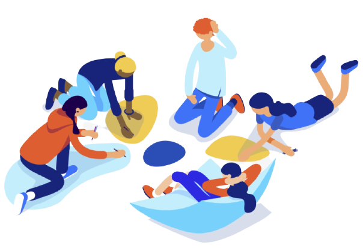
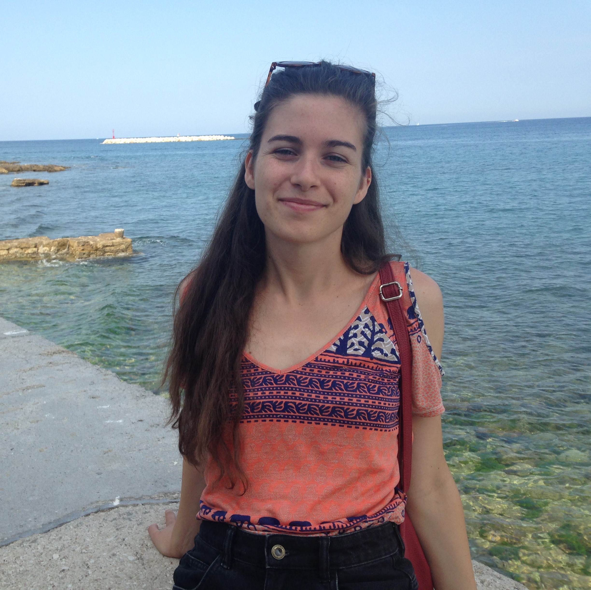
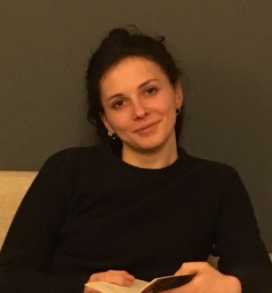

The purpose of this work derives from the research questions that have guided it from the very beginning. They concern:
the identification of the publishers responsible (due to their incorrect metadata sent to Crossref) for the missing citations in COCI;
the identification of the publishers to which such invalid citations point (i.e. who published the cited articles);
the number of currently valid citations among those initially invalid according to our input data.

Introduction
OpenCitations represents a relevant project inside the Open Science domain, in particular for what concerns the open scholarly citations. Indeed, its capability of conveying a relevant number of (open) citational information allows the creation of a wide net for the scientific community. COCI is the OC's Index of Crossref open DOI-to-DOI citations. All the information collected by OpenCitations and stored in COCI comes from Crossref. However, not all Crossref citations are transferred in COCI: some of them voluntarily, but some others because of technical errors, since their DOI is invalid. Hence, it represents a loss of information not only for OpenCitations but also for the scientific community. Moreover, also the publishers of the article connected to these invalid identifiers are directly affected by this gap from two different perspectives: they can be the direct responsibles for committing the errors which invalidate the DOIs of the cited source, since Crossref does not perform a double-check of the information provided by the publishers; or they can be the publishers of the articles which are wrongly cited and, because of this, they lose all the advantages of being citable (e.g. acknowledgments).
The purpose of this work derives from the research questions that have guided it from the very beginning. They concern:
The identification of the publishers responsible (due to their incorrect metadata sent to Crossref) for the missing citations in COCI;
The identification of the publishers to which such invalid citations point (i.e. who published the cited articles);
The number of currently valid citations among those initially invalid according to our input data.
In particular, among the data obtained and collected in the output file, we have selected some more suitable to represent the information found and therefore facilitate its interpretation:
The names and identifiers of the publishers involved in the citations (either as the publishers of the citing DOI or the publisher of the cited DOIs);
The numbers of the valid and invalid citations they are responsible for as the publishers of the valid citing DOI;
The number of the valid and invalid citations they are involved in as publishers of the cited DOI;
The total number of DOIs now valid.
Based on the research questions and hence on the purpose of the project thus defined, the objective of our work is firstly to identify the main publishers involved in these missing citations; and, secondly, patterns of errors and if they could be attributable to certain activities of some publishers; for instance, if the presence of these incorrect DOIs is to attribute exclusively to the incorrect sending of the citational metadata of the publications by the publisher to Crossref. This objective could be translated into another broader objective of making sure that more data can be integrated into COCI by correcting the activities carried out by the publishers that lead to these missing citations and invalid data; or hypothesize a different method of collecting the citational data from publishers that can prevent the insertion of incorrect citational data in platforms such as Crossref.
Which publishers were responsible (due to their incorrect metadata sent to Crossref) for the missing citations in COCI?
explaination of the question and the data
publisher
invalid citing
valid citing
total citing
explaination of the chart
To which publishers did such invalid citations point to (i.e. who published the cited articles)?
explaination of the question and the data
publisher
invalid cited
valid cited
total cited
explaination of the chart
How many invalid citations are currently valid?
Text for the results of the third question
Conclusions
About

Alessia Cioffi
Graduated in Classical Literature at the University of Bologna. I'm currently attending the Digital Humanities and Digital Knowledge Master Degree course at the same University.
Arianna Moretti
Graduated in Anthropology at the University of Bologna. I'm currently attending the Digital Humanities and Digital Knowledge Master Degree course at the same University.
Nooshin Shahidzadeh Asadi
Graduated in software engineering at the University of Tehran. I'm currently attending the Digital Humanities and Digital Knowledge Master Degree course at the University of Bologna.

Sara Coppini
Graduated in Philosophy at the University of Bologna. I'm currently attending the Digital Humanities and Digital Knowledge Master Degree course at the same University.